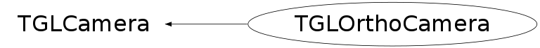

class TGLOrthoCamera: public TGLCamera
TGLOrthoCamera Orthographic projection camera. Currently limited to three types defined at construction time - kXOY, kXOZ, kZOY - where this refers to the viewport plane axis - e.g. kXOY has X axis horizontal, Y vertical - i.e. looking down Z axis with Y vertical. The plane types restriction could easily be removed to supported arbitary ortho projections along any axis/orientation with free rotations about them.
Function Members (Methods)
public:
protected:
| void | TGLCamera::UpdateCache() const |
Data Members
public:
| enum EType { | kZOY | |
| kXOZ | ||
| kXOY | ||
| kZnOY | ||
| kXnOZ | ||
| kXnOY | ||
| }; | ||
| enum TGLCamera::EFrustumPlane { | kNear | |
| kLeft | ||
| kRight | ||
| kTop | ||
| kBottom | ||
| kFar | ||
| kPlanesPerFrustum | ||
| }; |
protected:
| Bool_t | TGLCamera::fCacheDirty | ! cached items dirty? |
| TGLMatrix | TGLCamera::fCamBase | ! tranformation to center and rotation from up to x vector |
| TGLMatrix | TGLCamera::fCamTrans | ! transformation relative to fCamTrans |
| TGLVector3* | TGLCamera::fCenter | ! current camera center |
| TGLMatrix | TGLCamera::fClipM | ! object space clip matrix (cached) |
| TGLVector3 | TGLCamera::fDefCenter | ! deafult camera center |
| Double_t | TGLCamera::fDollyDefault | ! default distnce from viewing centre |
| Double_t | TGLCamera::fDollyDistance | ! unit distance for camera movement in fwd/bck direction |
| TGLVector3 | TGLCamera::fExtCenter | ! external camera center |
| Bool_t | TGLCamera::fExternalCenter | ! use external center insead of scene center |
| TGLVector3 | TGLCamera::fFDCenter | ! fixed deafult camera center |
| Double_t | TGLCamera::fFarClip | ! last applied far-clip |
| Bool_t | TGLCamera::fFixDefCenter | ! use fixed default center |
| TGLPlane | TGLCamera::fFrustumPlanes[6] | ! frustum planes (cached) |
| TGLBoundingBox | TGLCamera::fInterestBox | ! the interest box - created in UpdateInterest() |
| Double_t | TGLCamera::fLargestSeen | ! largest box diagonal seen in OfInterest() - used when |
| TGLMatrix | TGLCamera::fLastNoPickProjM | ! no-pick projection matrix (cached) |
| TGLMatrix | TGLCamera::fModVM | ! modelView matrix (cached) |
| Double_t | TGLCamera::fNearClip | ! last applied near-clip |
| TGLMatrix | TGLCamera::fProjM | ! projection matrix (cached) |
| UInt_t | TGLCamera::fTimeStamp | ! timestamp |
| Float_t | TGLCamera::fVAxisMinAngle | ! minimal allowed angle between up and fCamTrans Z vector |
| TGLRect | TGLCamera::fViewport | ! viewport (GL coords - origin bottom left) |
| static UInt_t | TGLCamera::fgDollyDeltaSens |
private:
| Double_t | fDefXSize | |
| Double_t | fDefYSize | ! x, y size of scene from camera view |
| Bool_t | fDollyToZoom | ! zoom when dolly is requested |
| Bool_t | fEnableRotate | ! enable rotation |
| TGLOrthoCamera::EType | fType | ! camera type |
| TGLBoundingBox | fVolume | ! scene volume |
| Double_t | fZoom | ! current zoom |
| Double_t | fZoomDefault | ! default zoom factor |
| Double_t | fZoomMax | ! maximum zoom factor |
| Double_t | fZoomMin | ! minimum zoom factor |
| static UInt_t | fgZoomDeltaSens |
Class Charts
{kind=link}
{kind=link}
{kind=link}
{kind=link}

Function documentation
TGLOrthoCamera(TGLOrthoCamera::EType type, const TGLVector3& hAxis, const TGLVector3& vAxis)
Construct orthographic camera.
void Setup(const TGLBoundingBox& box, Bool_t reset = kTRUE)
void Reset()
Bool_t Dolly(Int_t delta, Bool_t mod1, Bool_t mod2)
Dolly the camera. By default the dolly is reinterpreted to zoom, but it can be changed by modifying the fDollyToZoom data-member.
Bool_t Zoom(Int_t delta, Bool_t mod1, Bool_t mod2)
Zoom the camera - 'adjust lens focal length, retaining camera position'. Arguments are: 'delta' - mouse viewport delta (pixels) - +ive zoom in, -ive zoom out 'mod1' / 'mod2' - sensitivity modifiers - see TGLCamera::AdjustAndClampVal() For an orthographic camera dollying and zooming are identical and both equate logically to a rescaling of the viewport limits - without center shift. There is no perspective foreshortening or lens 'focal length'. Returns kTRUE is redraw required (camera change), kFALSE otherwise.
void SetZoomMax(Double_t z)
Set maximum zoom factor. If current zoom is greater than z it is set to z.
void Apply(const TGLBoundingBox& sceneBox, const TGLRect* pickRect = 0) const
Apply the camera to the current GL context, setting the viewport, projection and modelview matricies. After this verticies etc can be directly entered in the world frame. This also updates the cached frustum values, enabling all the projection, overlap tests etc defined in TGLCamera to be used. Arguments are: 'box' - view volume box - ignored for ortho camera. Assumed to be same as one passed to Setup(). 'pickRect' - optional picking rect. If non-null, restrict drawing to this viewport rect.
void Configure(Double_t zoom, Double_t dolly, Double_t* center, Double_t hRotate, Double_t vRotate)
Configure the camera state. zoom - set directly (default = 0.78); dolly - additional move along the camera forward direction; center - new camera center (can be 0 for no change); hRotate - additional "up/down" rotation in radians; vRotate - additional "left/right" rotation in radians.